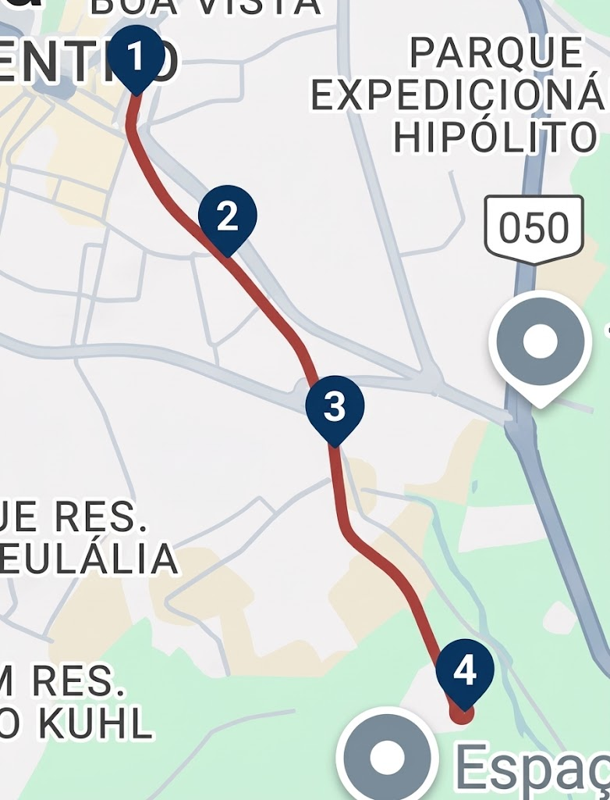

Detalhes da Rota
Linhas e Rotas
Consulte as linhas disponíveis e encontre informações sobre trajetos e horários
Consultar linha
Digite uma linha
Trajeto
Pontos de Embarque
- Terminal Urbano Central
- Avenida Campinas
- Via Prefeito Jurandir Paixão
- Distrito Industrial

Pontos importantes no mapa
- 1. Terminal Urbano Central
- 2. Avenida Campinas
- 3. Via Prefeito Jurandir Paixão
- 4. Distrito Industrial